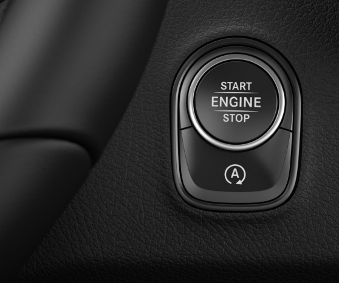

Opstarten
Je auto opstarten met de app.
Je wilt je auto opstarten met de app, maar je batterij van je mobiel is leeg.
Sleutel

De digitale autosleutel.
Daarna wil je je auto met de sleutel ontgrendelen, je klikt op de ontgrendel knop maar de batterij van je sleutel is ook leeg
Portier
Sesam op u.
Je pakt de reserver portier sleutel uit het frame en hiermee open je de portier van je auto en de auto wordt ontgrendeld. Vervolgens stap je in.